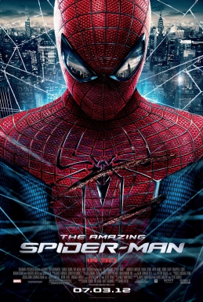

The first of these two films was released in 2012, following the popularity and success of the previous franchise. Development for this film was initially because of the cancelliation of a Spider-Man 4 with Tobey Maguire. Unfortunately, this series faced the same fate, with cancelliation after the second movie because of the want for a new series.
The primary heroine in this series is Gwen Stacy by Emma Stone.
